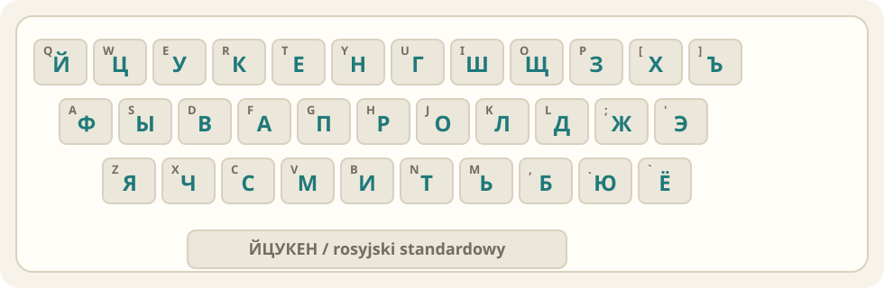

Rosyjski alfabet cyrylicki
Ucz się cyrylicy aktywnie, krótko i regularnie.
Rozpoznawanie, przykłady w słowach, pisanie, pary i powtórki adaptacyjne. Bez logowania, bez sieci, bez zewnętrznych bibliotek.
ЖЯФЩЮ
Teoria
Jak działa alfabet rosyjski
Co tu ćwiczymy
Ta aplikacja uczy rosyjskiego alfabetu cyrylickiego: 33 znaków używanych we współczesnym rosyjskim. Cyrylica to rodzina alfabetów. Języki słowiańskie zapisywane cyrylicą mają wspólne korzenie pisma, ale ich współczesne alfabety nie są identyczne.
Dlatego ćwiczenia nie uczą „całej cyrylicy świata”, tylko alfabetu rosyjskiego. To dobry punkt startu, ale czytanie ukraińskiego albo białoruskiego wymaga poznania dodatkowych i brakujących znaków.
Kolejność alfabetu
А Б В Г Д Е Ё Ж З И Й К Л М Н О П Р С Т У Ф Х Ц Ч Ш Щ Ъ Ы Ь Э Ю Я
To odpowiednik kolejności alfabetycznej. Przydaje się w słownikach, indeksach i sortowaniu nazwisk.
Wielkie i małe litery
Większość małych liter wygląda jak pomniejszona wersja wielkiej, ale nie wszystkie są intuicyjne dla osób znających łacinkę. Szczególnie warto oswoić pary: Б/б, Д/д, И/и, Й/й, Л/л, Т/т.
Najpierw rozpoznawanie
Najskuteczniej działa podział na znaki podobne, fałszywych znajomych, nowe spółgłoski, samogłoski jotowane oraz znaki bez własnego dźwięku.
Aktywne przypominanie
Quizy, pisanie i łączenie par są ważniejsze niż samo czytanie tabeli. Aplikacja częściej pokazuje znaki, które mają niski wynik opanowania.
Klawiatura rosyjska
Rosyjska klawiatura komputerowa zwykle używa układu ЙЦУКЕН. To nie jest QWERTY z prostą podmianą liter: górny rząd zaczyna się od Й Ц У К Е Н Г Ш Щ З Х Ъ. Na telefonie najłatwiej dodać klawiaturę rosyjską w ustawieniach systemu.

Osoby uczące się poza Rosją często używają też układów fonetycznych, gdzie rosyjskie litery są przypisane do podobnie brzmiących klawiszy łacińskich, np. А pod A, Б pod B, Ф pod F.
Rosyjski, ukraiński, białoruski
Wszystkie trzy alfabety są cyrylickie, ale różnią się zestawem liter i funkcją niektórych znaków.
🇷🇺 Rosyjski33 litery. Ma Ё, Ы, Э, Ъ. Nie ma І, Ї, Є, Ґ, Ў.
🇺🇦 Ukraiński33 litery. Ma Ґ, Є, І, Ї oraz apostrof. Nie używa rosyjskich Ё, Ы, Э, Ъ.
🇧🇾 Białoruski32 litery. Ma І i Ў. Używa apostrofu, nie ma rosyjskiego Ъ.
Praktyczny wniosek: po rosyjskim łatwiej wejść w inne alfabety cyrylickie, ale nie należy zakładać, że każdy znak działa tak samo.
Tabela aktywna
Litery, przykłady i skojarzenia
Powtórki adaptacyjne
Fiszki
🇷🇺
А
dotknij, aby odkryć
🇵🇱
a
jak polskie „a”
Wybór odpowiedzi
Jaki to zapis łaciński?
Aktywne przypominanie
Wpisz polski zapis brzmienia
🇷🇺
Д
Rozpoznawanie wzorców
Połącz pary
Łącz kartę z 🇷🇺 z kartą z 🇵🇱.
Plan od zera
Ścieżka nauki
Znaki podobne
А, К, М, О, Т, Е. Cel: szybkie wejście i pierwsze sukcesy.
Fałszywi znajomi
В, Н, Р, С, У, Х. Cel: przestać czytać je po łacińsku.
Nowe spółgłoski
Б, Г, Д, Ж, З, И, Й, Л, П, Ф, Ц, Ч, Ш. Cel: rozpoznawać większość rosyjskich słów.
Samogłoski i znaki specjalne
Ё, Ы, Э, Ю, Я, Щ, Ъ, Ь. Cel: pełny alfabet i trudniejsze mechanizmy wymowy.